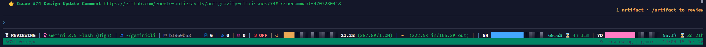
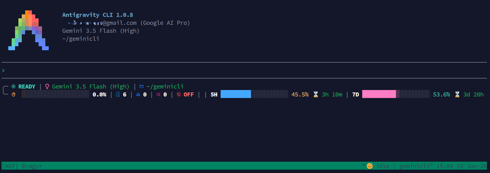

Сучасна, адаптивна та інтелектуальна панель стану (statusline) для Antigravity CLI (agy). Отримуйте миттєві телеметричні дані розробника в реальному часі без перенавантаження робочого простору.
Спробуйте різні конфігурації ширини термінала та стилів іконок, щоб побачити, як статуслайин автоматично адаптується.
Повна інформація про стан розробки в реальному часі безпосередньо у вашому вікні термінала.
Автоматично перемикається між трьома режимами (Wide, Medium, Small) відповідно до ширини вашого вікна, запобігаючи негарному розриву рядків.
Працює безпосередньо з локальним клієнтом Git, повертаючи поточну гілку та стан dirty/clean миттєво і точно.
Визначає активну модель штучного інтелекту та перемикає лічильники 5-годинної та тижневої квоти разом із часом до їх скидання.
Візуально відображає мережевий статус вашого безпечного оточення: ON (net), ON (no-net) або повністю вимкнено.
Має графічний 20-сегментний індикатор заповнення контекстного вікна разом із лічильником вхідних/вихідних токенів у форматі K/M.
Дозволяє тримати під візуальним контролем кількість запущених у фоні автономних субагентів та поточних фонових процесів.
Перегляньте скріншоти статуслайну в реальних умовах розробки.


Не вимагає root доступу чи глобального втручання. Встановлюється виключно в межах локального профілю користувача.
Скопіюйте та виконайте автоматичний скрипт встановлення у вашому Bash/Zsh терміналі:
Переконайтесь, що у вашому конфігураційному файлі ~/.gemini/antigravity-cli/settings.json активовано статуслайн:
Запустіть PowerShell від імені вашого поточного користувача та виконайте команду:
Скрипт автоматично пропише шлях у конфігураційний файл, але ви завжди можете відредагувати його вручну за шляхом %USERPROFILE%\.gemini\antigravity-cli\settings.json:
Якщо ви використовуєте термінал, який не підтримує розширені гліфи Nerd Fonts (наприклад, стандартний TTY, ChromeOS Terminal або Emacs), ви можете увімкнути Classic Mode. Цей режим замінює складні іконки на стандартні ASCII-символи.
Щоб увімкнути режим сумісності, додайте параметр --classic до команди виклику в конфіг-файлі.